생산자동화산업기사 (2014-08-17 기출문제)
1과목: 기계가공법 및 안전관리
1. 선삭에서 바이트의 윗면 경사각을 크게 하고 연강 등 연한 재질의 공작물을 고속 절삭할 때 생기는 칩(chip)의 형태는 무엇인가?
- 유동형
- 전단형
- 열단형
- 균열형
(정답률: 71%)

2. 표면 거칠기 측정법에 해당되지 않는 것은 무엇인가?
- 다이얼 게이지 이용 측정법
- 표준편과의 비교 측정법
- 광 절단식 표면 거칠기 측정법
- 현미 간섭식 표면 거칠기 측정법
(정답률: 76%)
3. 브로치 절삭날 피치를 구하는 식은 무엇인가? (단, P=피치, L=절삭날의 길이, C는 가공물 재질에 따른 상수이다.)
- P=C√L
- P=C×L
- P=C×L2
- P=C2×L
(정답률: 53%)
4. 결합제의 주성분은 열경화성 합성수지 베크라이트로 결합력이 강하고 탄성이 커서 고속도강이나 광학유리 등을 절단하기에 적합한 숫돌은 무엇인가?
- vitrified계 숫돌
- resinoid계 숫돌
- silicate계 숫돌
- rubber계 숫돌
(정답률: 65%)
5. 밀링 머신의 크기를 번호로 나타낼 때 옳은 설명은 무엇인가?
- 번호가 클수록 기계는 크다.
- 호칭번호 No.0(0번)은 없다.
- 인벌류트 커터의 번호에 준하여 나타낸다.
- 기계의 크기와는 관계가 없고 공작물 종류에 따라 번호를 붙인다.
(정답률: 73%)
6. 측정기에 대한 설명으로 올바른 것은?
- 일반적으로 버니어 캘리퍼스가 마이크로미터보다 측정 정밀도가 높다.
- 사인 바(sine bar)는 공작물의 내경을 측정한다.
- 다이얼 게이지는 각도 측정기이다.
- 스트레이트 에지(straight edge)는 평면도의 측정에 사용된다.
(정답률: 66%)
7. 사고발생이 많이 일어나는 것에서 점차로 적게 일어나는 것에 대한 순서로 올바른 것은?
- 불안전한 조건 → 불가항력 → 불안전한 행위
- 불안전한 행위 → 불가항력 → 불안전한 조건
- 불안전한 행위 → 불안전한 조건 → 불가항력
- 불안전한 조건 → 불안전한 행위 → 불가항력
(정답률: 79%)
8. 트위스트 드릴의 인선각(표준각 또는 날끝각)은 연강용에 대해서 몇 도(°)를 표준으로 하여야 하는가?
- 110°
- 114°
- 118°
- 122°
(정답률: 78%)
9. 연삭작업에서 글레이징(Glazing) 원인으로 바르지 않은 것은?
- 결합도가 너무 높다.
- 숫돌바퀴 원주 속도가 너무 빠르다.
- 숫돌 재질과 일감 재질이 적합하지 않다.
- 연한 일감 연삭시 발생한다.
(정답률: 60%)
10. 한계 게이지에 대한 설명으로 올바른 것은?
- 스냅 게이지는 최소 치수측을 통과측, 최대 치수측을 정지측이라 한다.
- 양쪽 모두 통과하면 그 부분은 공차 내에 있다.
- 플러그 게이지는 최대 치수측을 정지측, 최소 치수측을 통과측이라 한다.
- 통과측이 통과되지 않을 경우는 기준구멍보다 큰 구멍이다.
(정답률: 49%)
11. 환봉을 황삭 가공하는데 이송을 0.1m m/rev로 하려고 한다. 바이트의 노즈 반경이 1.5mm라고 한다면 이론상의 최대 표면 거칠기는 얼마인가?
- 8.3×10-4㎜
- 8.3×10-3㎜
- 8.3×10-5㎜
- 8.3×10-2㎜
(정답률: 53%)
12. 끼워 맞춤에서 H6g6는 무엇을 뜻하는 것인가?
- 축 기준 6급 헐거운 끼워 맞춤
- 축 기준 6급 억지 끼워 맞춤
- 구멍 기준 6급 헐거운 끼워 맞춤
- 구멍 기준 6급 중간 끼워 맞춤
(정답률: 63%)
13. 밀링가공에서 커터의 날 수 6개, 1날당의 이송 0.2mm, 커터의 외경 40mm, 절삭속도 30m/min일 때 테이블의 이송속도는 약 몇 mm/min가 되는가?
- 274
- 286
- 298
- 312
(정답률: 71%)
14. 액체 호닝의 특징으로 잘못된 것은 무엇인가?
- 가공 시간이 짧다.
- 가공물의 피로강도를 저하시킨다.
- 형상이 복잡한 가공물도 쉽게 가공한다.
- 가공물 표면의 산화막이나 거스러미를 제거하기 쉽다.
(정답률: 70%)
15. 드릴지그의 분류 중 상자형 지그에 포함되지 않는 것은 무엇인가?
- 개방형 지그
- 조립형 지그
- 평판형 지그
- 밀폐형 지그
(정답률: 56%)
16. 바깥지름이 200mm인 밀링커터를 100 rpm으로 회전시키면 절삭속도는 약 몇 m/min인가?
- 1.⑤
- 2.08
- 31.4
- 62.8
(정답률: 69%)
17. 밀링 머신에서 분할 및 윤곽가공을 할 때 이용되는 부속장치는 무엇인가?
- 밀링 바이스
- 회전 테이블
- 모방 밀링장치
- 슬로팅 장치
(정답률: 65%)
18. 선반의 양센터 작업에서 주축의 회전을 공작물에 전달하기 위하여 사용되는 것은 무엇인가?
- 센터 드릴
- 돌리개
- 면판
- 방진구
(정답률: 68%)
19. 어떤 도면에서 편심량을 4mm로 주어졌을 때, 실제 다이얼 게이지의 눈금의 변위량은 얼마로 표시해야 하는가?
- 2mm
- 4mm
- 8mm
- 0.5mm
(정답률: 70%)
20. NC선반의 절삭사이클 중 내ㆍ외경 복합 반복 사이클에 해당하는 것은 무엇인가?
- G40
- G50
- G71
- G96
(정답률: 56%)
2과목: 기계제도 및 기초공학
21. 그림은 맞물리는 어떤 기어를 나타낸 간략도인데, 이 기어는?
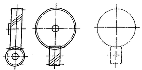
- 스퍼 기어
- 헬리컬 기어
- 나사 기어
- 스파이럴 베벨기어
(정답률: 50%)
22. 그림과 같은 정면도에 의하여 나타날 수 있는 평면도로 가장 적합한 것은 무엇인가?
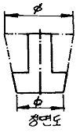
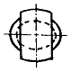
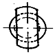
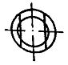
(정답률: 58%)
23. 줄무늬 방향의 그림과 그 기호가 서로 바르지 않은 것은?
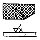
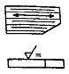
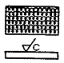
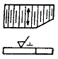
(정답률: 82%)
24. 다음 금속재료 기호 중 탄소강 단강품의 KS 기호는 무엇인가?
- SF 440 A
- FC 440 A
- SC 440 A
- HBsC 440 A
(정답률: 51%)
25. 구멍의 치수가
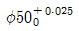
이고, 축의 치수가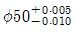
이라면 무슨 끼워 맞춤 이겠는가?- 헐거운 끼워 맞춤
- 중간 끼워 맞춤
- 억지 끼워 맞춤
- 가열 끼워 맞춤
(정답률: 66%)
26. 축의 도시방법에 관한 일반적인 설명으로 바르지 않은 것은?
- 축의 구석부나 단이 형성되어 있는 부분에 형상에 대한 세부적인 지시가 필요할 경우 부분 확대도로 표시할 수 있다.
- 긴 축은 단축하여 그릴 수 있으나 길이는 실제 길이를 기입해야 한다.
- 축은 통상 길이방향으로 단면 도시하여 나타낼 수 있다.
- 축의 절단면은 90도 회전하여 회전도시 단면도로 나타낼 수 있다.
(정답률: 75%)
27. 다음 중 H7 구멍과 가장 억지로 끼워지는 축의 공차는 무엇인가?
- f6
- h6
- p6
- g6
(정답률: 85%)
28. 일반적으로 치수선을 그릴 때 사용하는 선의 며칭은 무엇인가?
- 굵은 2점 쇄선
- 굵은 1점 쇄선
- 가는 실선
- 가는 1점 쇄선
(정답률: 84%)
29. KS 규격에 따른 나사의 표시에 관한 설명 중 옳은 것은?
- 나사산의 감김 방향은 오른나사인 경우만 RH로 명기하고, 왼 나사인 경우 따로 명기하지 않는다.
- 미터 가는 나사는 피치를 생략하거나 산의 수로 표시한다.
- 2줄 이상인 경우 그 줄 수를 표시하며 줄 대신에 L로 표시할 수 있다.
- 피치를 산의 수로 표시하는 나사(유니파이 나사 제외)의 경우 나사호칭은 (나사의 종류를 표시하는 기호, 나사의 지름을 표시하는 숫자, 산의수) 나타낸다.
(정답률: 69%)
30. 다음 중 기계제도의 기본원칙에 어긋나는 것을 「보기」에서 모두 고른 것은 무엇인가?
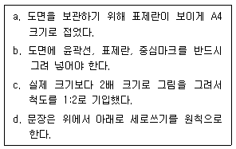
- a, b
- b, c
- c, d
- a, d
(정답률: 70%)
31. 지름이 4mm인 원의 1/4 크기에 해당하는 부채꼴의 면적은 얼마인가? (단, π는 3.14이다.)
- 1.57mm2
- 3.14mm2
- 6.28mm2
- 12.56mm2
(정답률: 72%)
32. 응력의 종류가 아닌 것은 무엇인가?
- 압축 응력
- 인장 응력
- 전단 응력
- 피로 응력
(정답률: 85%)
33. 그림과 같이 길이 ℓ(m)의 단순보에 ω(N/m)의 균일분포하중이 작용할 때 발생하는 최대 굽힘 모멘트는 무엇인가?
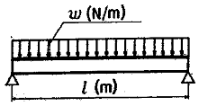
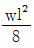
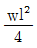
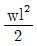
- wℓ2
(정답률: 50%)
34. 전기에 관한 설명으로 바르지 않은 것은?
- 전류는 음(-)극에서 양(+)극으로 흐른다.
- 전자는 음(-)극에서 양(+)극으로 이동한다.
- 전기적인 압력의 차이를 전압이라 한다.
- 전기저항은 도체의 길이에 비례하고 도체의 단면적에 반비례한다.
(정답률: 74%)
35. 유압 제어시스템에 사용되는 유압 실린더의 동작 원리와 가장 관계 깊은 것은 무엇인가?
- 파스칼의 원리
- 질량 보존의 법칙
- 베르누이의 정리
- 보일의 법칙
(정답률: 83%)
36. 단면적이 30cm2인 배관에 2m/s의 속도로 물이 흘러가고 있다면 유량은 얼마인가?
- 20cm3/s
- 600cm3/s
- 6000cm3/s
- 60000cm3/s
(정답률: 74%)
37. 철판을 1초에 200mm 가공하는 레이저 가공기가 있다. 이 기계의 가공 속도(m /min)는 얼마인가?
- 0.2
- 12
- 200
- 12000
(정답률: 71%)
38. 1kW의 동력을 일의 단위로 나타내면 얼마인가?
- 95kgfㆍm/s
- 102kgfㆍm/s
- 112kgfㆍm/s
- 130kgfㆍm/s
(정답률: 79%)
39. 1N을 나타낸 것으로 바르지 않은 것은?
- 1kgㆍm/s2
- 105dyn
- 105gㆍcm/s2
- 1kgf
(정답률: 42%)
40. 그림과 같은 지렛대의 양단 끝에 힘이 작용하고 중앙에 받침점이 있고 평형을 이루었을 때 올바른 식은?
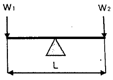
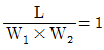
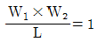
- W1=W2
- (W1×W2)L=1
(정답률: 71%)
3과목: 자동제어
41. 과도응답에서 상승시간은 응답이 최종값의 몇 %까지의 시간으로 정의되는가?
- 0~10
- 10~90
- 30~70
- 0~100
(정답률: 85%)
42. 다음 그림과 같은 블록선도의 전달함수로 옳은 것은 무엇인가?
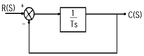
- 1/Ts
- 1/Ts+1
- Ts+1
- Ts
(정답률: 77%)
43. PLC에서 프로그램을 한 사이클 실행하는데 소요되는 시간은 무엇인가?
- 로딩 타임(loading time)
- 딜레이 타임(delay time)
- 스캔 타임(scan time)
- 코딩 타임(coding time)
(정답률: 85%)
44. 다음 중 시퀀스 제어에 속하지 않는 것은 무엇인가?
- 전기로의 온도제어
- 자동판매기 제어
- 교통신호등 제어
- 컨베이어 제어
(정답률: 79%)
45. 다음 PLC 프로그램을 실행하는 데 걸리는 시간은 총 몇[ms]인가?
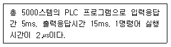
- 25
- 30
- 35
- 85
(정답률: 55%)
46. 제어량의 종류를 기준으로 온도, 압력, 유량, 액면 등의 상태량을 제어량으로 하는 제어는 무엇인가?
- 프로세스 제어
- 서보 기구
- 시퀀스 제어
- 자동 조정
(정답률: 76%)
47. 다음 그림과 같은 기호는 무엇을 뜻하는 것인가?
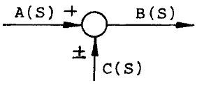
- 전달요소
- 가합점
- 인출점
- 출력점
(정답률: 82%)
48. 서보기구에 대한 설명으로 바르지 않은 것은?
- 제어량이 기계적 변위인 자동제어계를 의미한다.
- 일반적으로 신호변환부와 파워변환부로 구성된다.
- 신호변환 시 전기식보다는 공압식이 많이 사용된다.
- 서보기구의 파워변환부는 증력 및 조작을 행하는 부분이다.
(정답률: 82%)
49. 주파수 전달 함수가 G(jw)=1+j일 때 보드 선도의 위상은 얼마인가?
- 0°
- 45°
- 90°
- 135°
(정답률: 67%)
50. 다음 그림은 방향 제어 밸브의 기호이다. 명칭으로 올바른 것은 무엇인가?
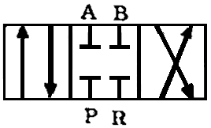
- 3포트 3위치 밸브
- 4포트 3위치 밸브
- 3포트 4위치 밸브
- 4포트 2위치 밸브
(정답률: 76%)
51. 유압펌프의 기계효율이 90%이고, 용적효율이 90%일 경우 펌프의 전 효율(Overall Efficiency)은 얼마인가?
- 45%
- 81%
- 85%
- 90%
(정답률: 70%)
52. 완전한 진공을 “0”으로 하는 압력의 세기는 무엇인가?
- 최고압력
- 평균압력
- 절대압력
- 게이지 압력
(정답률: 81%)
53. 자동제어의 필요성으로 부적합한 것은 무엇인가?
- 생산속도의 상승
- 제품의 품질 균일화
- 인건비 증가
- 노동조건의 상승
(정답률: 81%)
54. 다음 그림과 같이 결합된 2개의 전달함수의 값 G(s)을 구하시오.
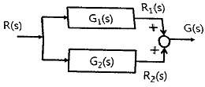
- G(s)=G1(s)×G2(s)
- G(s)=G1(s)+G2(s)
- G(s)=G2(s)÷G1(s)
- G(s)=G1(s)÷G2(s)
(정답률: 73%)
55. 어떤 제어계에 입력신호를 가한 다음 출력신호가 정상상태에 도달할 때까지를 무엇이라고 하는가?
- 선형 상태
- 과도 상태
- 무동작 상태
- 안정 상태
(정답률: 73%)
56. 릴레이제어에 비해 PLC제어의 특징을 설명한 것으로 바르지 않은 것은?
- 제어내용의 변경이 어렵다.
- 회로배선이 간소화 된다.
- 신뢰성이 향상된다.
- 보수가 용이하다.
(정답률: 84%)
57. 개회로 제어 시스템(open loop control system)을 적용하기에 적합하지 않은 제어계는 무엇인가?
- 외란 변수의 변화가 매우 작은 경우
- 여러 개의 외란 변수가 존재하는 경우
- 외란 변수에 의한 영향이 무시할 정도로 작은 경우
- 외란 변수의 특징과 영향을 확실히 알고 있는 경우
(정답률: 77%)
58. 주파수 응답에 주로 사용되는 입력은 무엇인가?
- 계단 입력
- 임펄스 입력
- 램프 입력
- 정현파 입력
(정답률: 72%)
59. 유압 시스템에서 유압유의 선택 시 필요한 조건 중 틀린 것은 무엇인가?
- 확실한 동력을 전달하기 위하여 압축성일 것
- 녹이나 부식 발생이 없을 것
- 화재의 위험이 없을 것
- 수분을 쉽게 분리시킬 수 있을 것
(정답률: 76%)
60. 압축공기를 공급하는 파이프 직경을 결정할 때 고려해야 할 항목이 아닌 것은 무엇인가?
- 압축공기 공급 유량
- 파이프 길이
- 파이프 라인 내의 교축 효과를 주는 부속 요소의 양
- 파이프 경사 각도
(정답률: 66%)
4과목: 메카트로닉스
61. 역방향 항복에서 동작하도록 설계되어진 다이오드로서 전압안정화 회로로 사용되는 것은 무엇인가?
- 제너 다이오드
- 쇼트키 다이오드
- 가변용량 다이오드
- 터널 다이오드
(정답률: 79%)
62. RL 병렬회로의 임피던스는 무엇인가?
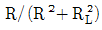
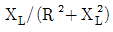
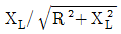
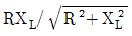
(정답률: 55%)
63. 지름 100mm의 공작물을 절삭길이 25 mm, 회전속도 300rpm, 이송속도 0.25 mm/rev으로 1회 가공할 때 소요되는 시간은 약 몇 초(sec)인지 고르시오.
- 10
- 20
- 30
- 40
(정답률: 59%)
64. 다이캐스팅 주조의 특징으로 바르지 않은 것은?
- 정밀도가 우수하다.
- 대량생산이 가능하다.
- 기공이 적고 치밀하다.
- 용융점이 높은 금속의 주조에 이용된다.
(정답률: 62%)
65. 센서가 갖추어야 할 조건으로 바르지 않은 것은?
- 소비전력이 클 것
- 호환성이 좋을 것
- 재현성, 안정성이 우수할 것
- 검출하고자 하는 물리량에 따라 출력이 가급적 직선적일 것
(정답률: 85%)
66. 아래 회로의 출력 전압값으로 올바른 것은?
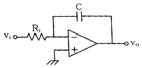
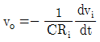
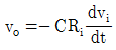
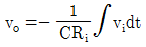
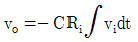
(정답률: 60%)
67. 수광부와 발광부가 대향 배치되어 있고, 그 사이에 물체가 들어가면 동작하게 되어 있는 포토 인터럽터의 특징으로 바르지 않은 것은?
- 소형 경량이다.
- 고 신뢰성이 있다.
- 저속 응답성이 있다.
- 높은 정밀도를 갖는다.
(정답률: 79%)
68. 마이크로 컴퓨터를 이용한 제어장치에서 프로그램이나 데이터를 일시 저장할 수 있는 기억장치는 무엇인가?
- CPU
- RAM
- ROM
- I/O 인터페이스
(정답률: 82%)
69. 여러 개의 입ㆍ출력 주변장치 중 어느 장치로부터 인터럽트가 발생 되었는지 CPU가 주변장치를 하나씩 순차로 점검하여 인터럽트를 요구한 장치를 찾아내는 방식은 무엇인가?
- 데이지 체인
- 벡터
- 폴링
- 핸드세이킹
(정답률: 65%)
70. 논리 대수의 공식으로 바르지 않은 것은?
- A + B = B + A
- (A + B) + C = A + (B + C)
- (A + B) ㆍ B = A ㆍ B
- A + (B ㆍ C) = (A + B) ㆍ (A + C)
(정답률: 67%)
71. RL 직렬 회로에 인가되는 전압의 주파수가 감소하면 위상각은 무엇인가?
- 증가한다.
- 감소한다.
- 변함없다.
- 일정시간 증가 후 감소한다.
(정답률: 60%)
72. 리액턴스의 설명으로 바르지 않은 것은?
- 자체 인덕턴스가 클수록 유도 리액턴스 값은 커진다.
- 정전용량이 작아질수록 용량 리액턴스의 값은 커진다.
- 교류전압의 주파수가 커질수록 용량 리액턴스의 값은 작아진다.
- 교류전압의 주파수가 커질수록 유도 리액턴스의 값은 작아진다.
(정답률: 44%)
73. PLC 사용시 접지하는 목적에 해당되지 않는 것은 무엇인가?
- 누설 전류에 의한 감전을 방지한다.
- 센서부의 입력 신호를 증폭하여 명확히 한다.
- PLC 제어반과 대지간의 전위차를 “0” 으로 한다.
- 혼입한 잡음을 대지로 배제하여 잡음의 영향을 감소시킨다.
(정답률: 66%)
74. AC 서보모터 특징이 아닌 것은 무엇인가?
- 자극의 위치검출이 필요없다.
- 브러시가 없기 때문에 보수가 용이하다.
- 코일이 스테이터에 있기 때문에 방열성이 좋다.
- 정류한계가 없기 때문에 고속 회전시 높은 토크가 가능하다.
(정답률: 53%)
75. 마이크로프로세서 내에서 산술 연산의 기본 연산은 무엇인가?
- 덧셈
- 뺄셈
- 곱셈
- 나눗셈
(정답률: 87%)
76. 10진수 0.6875를 2진수로 변환하면 무엇인가?
- (0.1011)2
- (0.1111)2
- (0.1101)2
- (0.1110)2
(정답률: 67%)
77. 서보 시스템에서 기준값과 실제값의 차를 무엇이라고 하는가?
- 외란
- 상태변수
- 제어편차
- 레퍼런스
(정답률: 82%)
78. 서로 다른 2종류의 금속 양끝을 접합하고 양접점간의 온도차에 의해 발생되는 열기전력을 이용하여 온도를 측정하는 것은 무엇인가?
- 열전쌍
- 서미스터
- 압전센서
- 측온저항체
(정답률: 77%)
79. 고정자측에 영구자석을 배치하여 공극부에 직류 바이어스 자계를 발생시켜 제어하는 스테핑 모터는 무엇인가?
- 가변 릴럭턴스형
- 반영구 자석형
- 영구 자석형
- 하이브리드형
(정답률: 62%)
80. 아래 논리회로를 간략화한 식으로 올바른 것은 무엇인가?
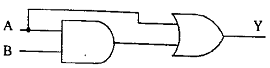
- Y=A+B
- Y=A
- Y=B
- Y=AB
(정답률: 52%)